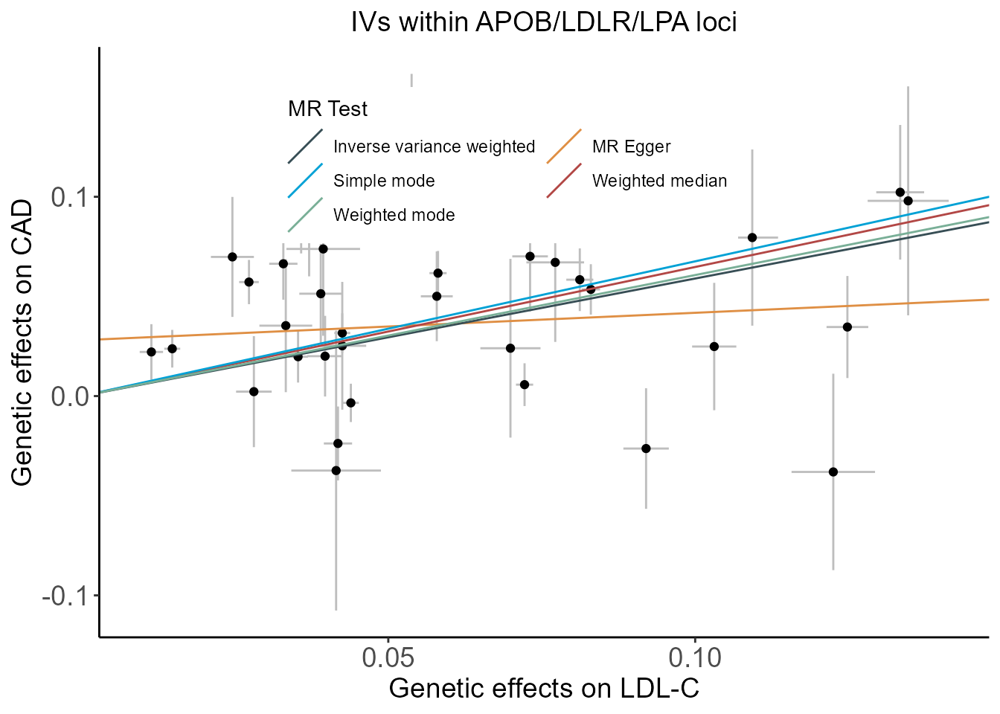
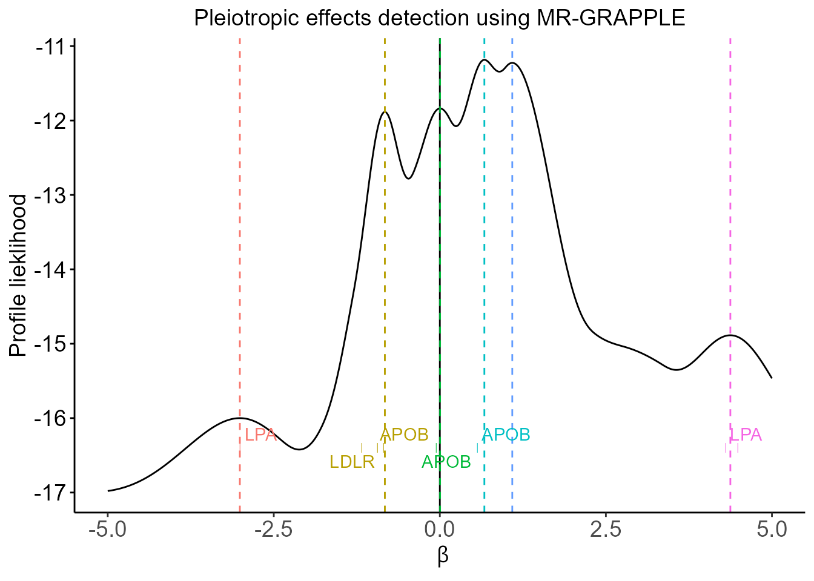
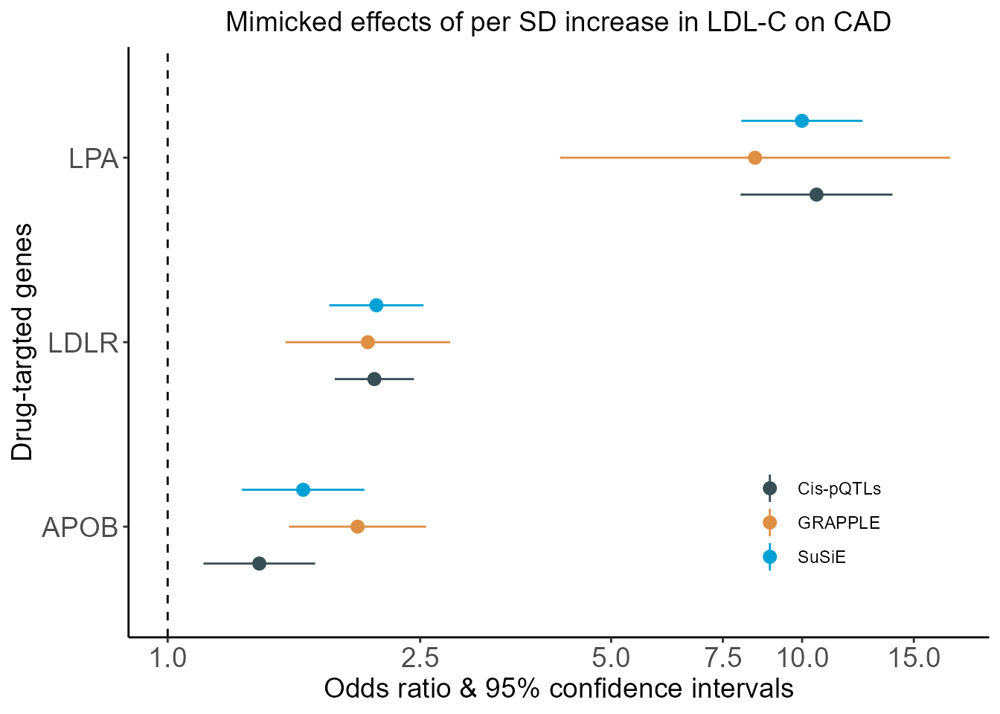
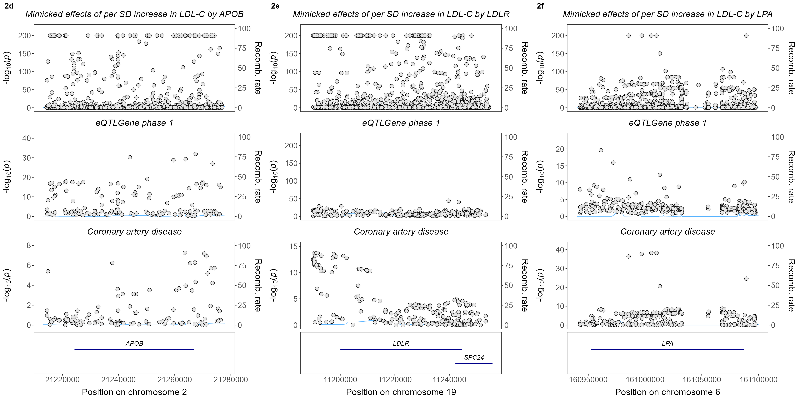

Reproduce the applied example in A translational framework of genoproteomic studies for cardiovascular drug discovery
YANG, Zhao
星期五, 四月 12, 2024, 15:27
Codes_for_Paper_1.RmdThis document contains materials required for reproducing the results of the applied example in A translational framework of genoproteomic studies for cardiovascular drug discovery. More details of the translational framework, please refer to our manuscript.
Note: To run the applied example successfully, you have to edit the scripts with your own data, parameters, and physical paths.
1. Prerequests
1.1 Packages
To run the codes for the applied example, one have to install pkg in R from GitHub, as follows,
# devtools::install_github("yangzhao98/drugTargetScreen",force=TRUE)
library(drugTargetScreen)
path.res <- getwd()
load(paste(
path.res,"/",
grep(".RData",list.files(path.res),value=TRUE),
sep=""))Moreover, one may have to install PLINK for LD clumping, with ancestry-specific 1000 Genome Project as the reference, available at MRCIEU.
1.2 Data sources
- GWAS summary statistics for LDL-C are available at the Global Lipids Genetics Consortium
- GWAS summary statistics for CAD are available at the CARDIoGRAMplusC4D Consortium
- GWAS summary statistics for 78 clinical endpoints and LDL-C in the UK Biobank are available at Neale lab
- Summary statistics of cis- and trans-eQTLs are available at the eQTLGen phase 1
2. Reproduce the results of the applied example
This example screens and verifies the low-density lipoprotein cholesterol (LDL-C)-lowering drug targets of statins (HMGCR), ezetimibe (NPC1L1), and PCSK9 inhibitors, which have been considered positive control examples in Schmidt et al. (2020) and Cardillo-Maranon et al. (2021).
names(datPosCtrl) <- c("Drug-target genes",
"Chr:position (GRCh37/hg19)",
"OR (95% CI)")
knitr::kable(datPosCtrl,
captions="Key results from Cardillo-Maranon et al. (2021)")| Drug-target genes | Chr:position (GRCh37/hg19) | OR (95% CI) | |
|---|---|---|---|
| 2 | HMGCR | 5:74632154-74657929 | 1.22 (1.03,1.45) |
| 3 | NPC1L1 | 7:44552134-44580914 | 2.01 (1.48,2.73) |
| 4 | PCSK9 | 1:5550221-55530525 | 1.60 (1.45,1.77) |
2.1 The translational framework for cardiovascular drug discovery
Briefly, this framework consists of four main stages,
Causal biomarkers screen
-
Drug-targeting protein discovery and verification
Elucidation of possible heterogeneous genetic effects oriented by polygenic IVs across the genome for the biomarker, utilizing methodologies such as Genome-wide mR Analysis under Pervasive PLEitropy (GRAPPLE) and MR-PATH
Exploration of the putative protein-disease association using cis-acting pQTL as IVs, supplemented by the inclusion of trans-acting variants and cis-position, trans-acting variants, as appropriate
Verification of putative drug-targeting proteins by examining whether the cis-acting variants are shared with the same causal variants as the upstream regulators or downstream intermediates, utilizing colocalization based on gene expression database or conducting cell and animal experiments.
Drug target relevant side effects exploration
Therapeutic efficacy and safety emulation
2.2 Implementations
## preparation
source(paste(path.res,"/0_precondition.R",sep=""))
source(paste(path.res,"/utilities.R",sep=""))
## codes for stage 1. Causal biomarkers screen
source(paste(path.res,"/1_cause_biomarkers_screen.R",sep=""))
## codes for stage 2. Drug-targeting protein discovery and verification
source(paste(path.res,"/2_discovery_verification.R",sep=""))
## codes for stage 3. Drug target relevant side effects exploration
source(paste(path.res,"/3_side_effects.R",sep=""))
## codes for Stage 4. Therapeutic efficacy and safety emulation
source(paste(path.res,"/4_target_trial_emulation.R",sep=""))2.3 Results of the applied example
2.3.1 Results from Stage 1
Scatter plot of genetic effects on LDL-C and CAD using all SNPs at genome-wide significance with LD clumping at \(r^2<0.3\) and those within either HMGCR, NPC1L1, or PCSK9 locus
plt.woCor
plt.4Gene
2.3.2 Results from Stage 2
- Pleiotropic effects detected using profile likelihood under the GRAPPLE framework
plt.GRAPPLE.profile
- Forest plot of MR estimates obtained from MR based on various kinds of IVs
plt.Forest
- Colocalization of LDL-C, eQTL, and CAD
plt.Step2